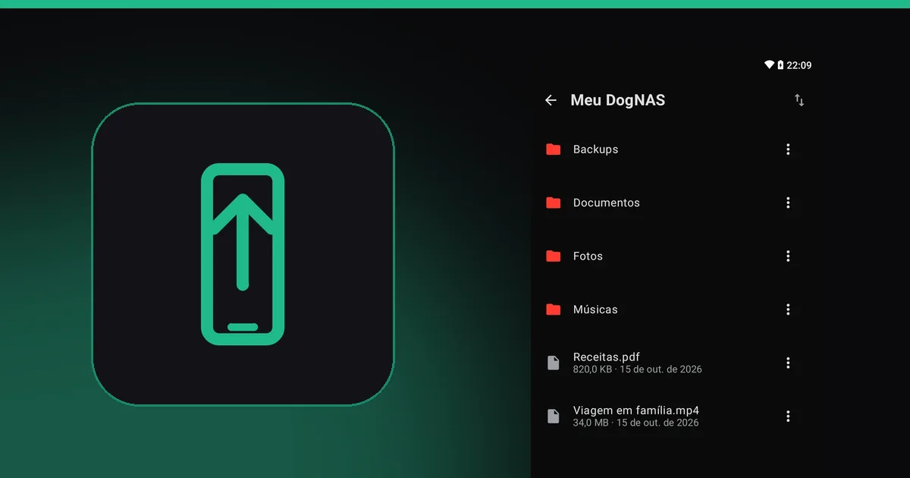
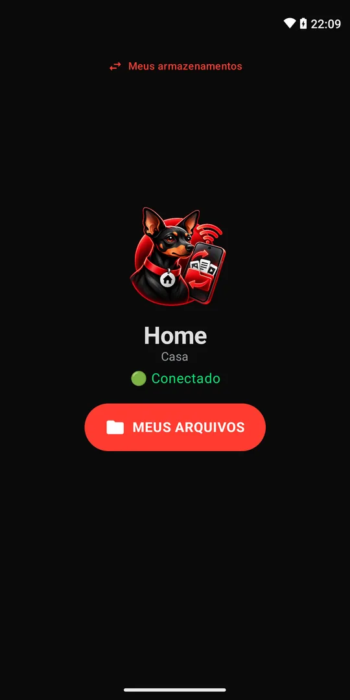

Como liberar espaço no celular Android sem perder suas fotos

"Armazenamento quase cheio" aparece sempre na hora errada: na festa, na viagem, quando você ia gravar um vídeo. A boa notícia é que dá para recuperar bastante espaço em poucos minutos, e para tirar do celular o que pesa mais sem perder nada.
Comece pelo que é fácil
Os caminhos mudam conforme o fabricante e a versão do Android, mas as ideias são as mesmas:
- Use a ferramenta do próprio Android. Em Configurações, procure Armazenamento e a opção de liberar espaço. O app Files, do Google, também sugere o que apagar.
- Limpe o cache dos apps que mais ocupam espaço, em Configurações, Apps.
- Desinstale o que você não usa. Apps parados ocupam espaço e ainda se atualizam sozinhos.
- Apague duplicados e downloads antigos, como instaladores, PDFs e prints repetidos.
- Revise o WhatsApp e outros mensageiros: fotos, vídeos e áudios de grupos costumam ocupar gigabytes.
Isso recupera espaço, mas é provisório. As fotos e os vídeos continuam sendo o que mais pesa, e a pergunta passa a ser: para onde levar tudo isso?
Levar fotos e vídeos para fora do celular
As opções mais comuns são a nuvem, o computador e um cartão ou disco externo. A nuvem é prática, mas o espaço é limitado e, depois dele, vem a mensalidade. Um servidor seu em casa resolve sem mensalidade: o celular manda os arquivos pelo Wi-Fi, e eles ficam guardados no seu armazenamento.
Com o DogNAS
O DogNAS transforma um Android que está sobrando (7.0 ou mais recente) em um servidor de arquivos da casa. No seu celular, use o DogNAS Client Lite, que é gratuito:
- Instale o servidor no Android antigo e crie o seu perfil.
- No celular que está sem espaço, abra o Client Lite, aponte a câmera para o QR Code do perfil e digite o PIN.
- Envie as fotos e os vídeos para o DogNAS pela fila de transferências.
- Confira se os arquivos chegaram ao servidor antes de apagar qualquer coisa do celular.



Cuidados importantes
- Confira antes de apagar. Abra algumas fotos e vídeos no servidor antes de liberar o espaço do celular.
- Mantenha uma cópia independente. O DogNAS guarda os arquivos no armazenamento que você escolheu e não faz backup por conta própria. Para o que é insubstituível, tenha uma segunda cópia em outro lugar.
- Só na sua rede. O acesso é pelo Wi-Fi de casa, então o servidor precisa estar ligado e conectado quando você quiser enviar ou baixar.
- Limite do plano Grátis. O DogNAS gerencia até 64 GB; o Pro, compra única sem assinatura, libera o armazenamento inteiro do aparelho.
Resumo
Limpe o cache, os apps e os duplicados, depois mande fotos e vídeos para um lugar seu. Se você ainda não tem onde guardar, use um Android antigo como servidor de arquivos e deixe o celular leve.